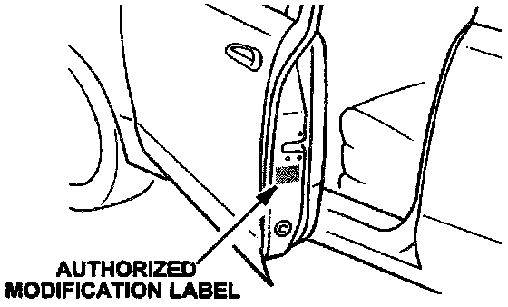
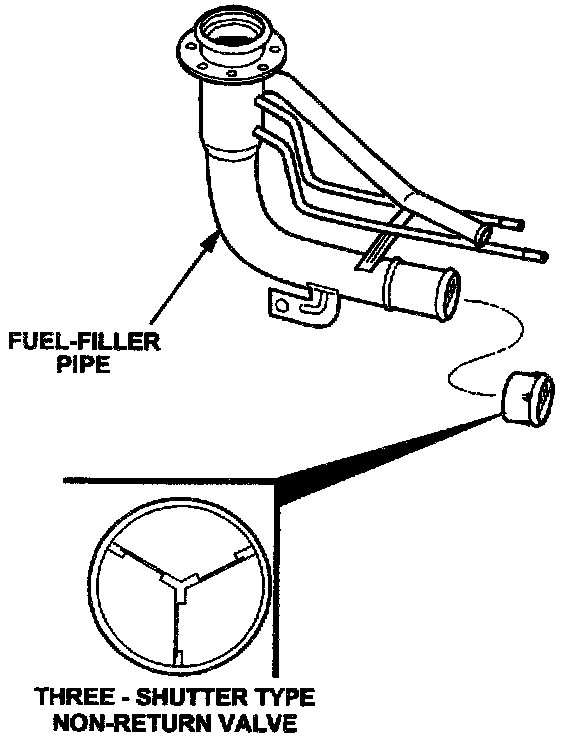

Attachment II
A. VEHICLE INSPECTION PROCEDURE1. Verify the vehicle is within the following VIN range:
^ VIN: JM1NB353* X0100001 - X0123562
- If vehicle is within the above VIN range, proceed to STEP 2.
- If vehicle is not within the above VIN range, return it to the customer or inventory.

2. Perform a Vehicle Status Inquiry using your MDCS System and inspect vehicle for an Authorized Modification Label RECALL # 88004 attached to the driver's side door. Refer to illustration shown.
Note
3. Be sure to verify recall number as the vehicle may have multiple recalls.
- If MDCS displays RECALL: 88004 N and an Authorized Modification Label is not present, the recall has not been performed. Proceed to "B.
NON-RETURN VALVE REPLACEMENT PROCEDURE."
- If MDCS displays RECALL: 88004 N and an Authorized Modification Label is present, contact the Warranty Department. They will update the vehicle history.
- If MDCS displays RECALL: 88004 D and an Authorized Modification Label is not present, proceed to "C. AUTHORIZED MODIFICATION LABEL INSTALLATION."
- If MDCS displays RECALL: 88004 D and an Authorization Modification Label is present, the recall has already been completed. Return the vehicle to the customer or inventory.
- If MDCS does not display RECALL: 88004 N or RECALL: 88004 D, this recall does not apply to the vehicle. Return vehicle to the customer or inventory.
B. NON-RETURN VALVE REPLACEMENT PROCEDURE

Replace the single-shutter type non-return valve located at the end of the fuel-filler pipe with the three-shutter type non-return valve as shown. Refer to the Workshop Manual (section 01-14). Proceed to "C. AUTHORIZATION MODIFICATION LABEL INSTALLATION".
C. AUTHORIZATION MODIFICATION LABEL INSTALLATION
Complete an "Authorized Modification Label" with the recall number # 88004 written on the label and affix it to driver's side door under the door latch. Refer back to the illustration under "A. VEHICLE INSPECTION PROCEDURE."